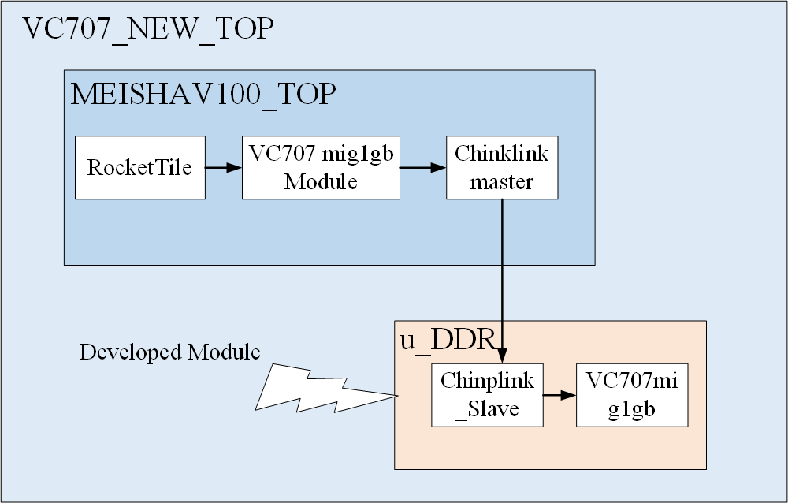
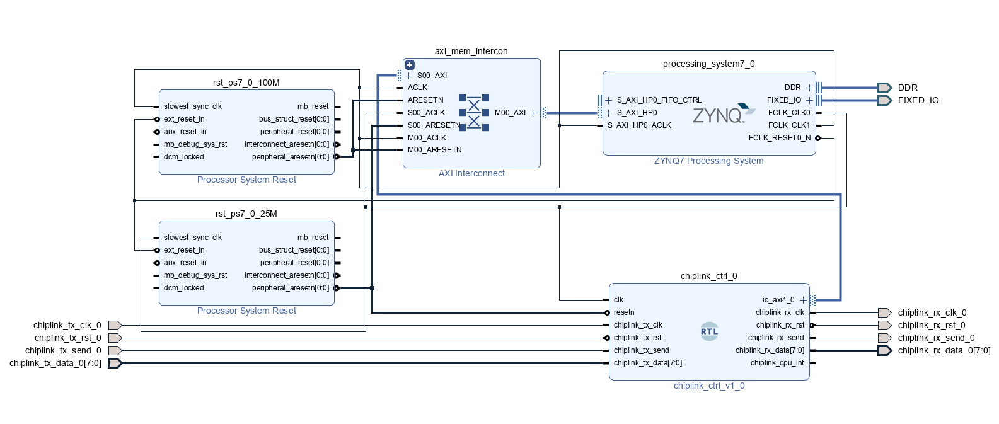
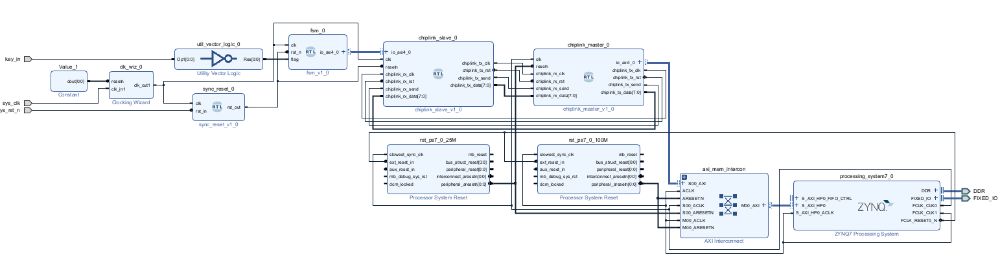
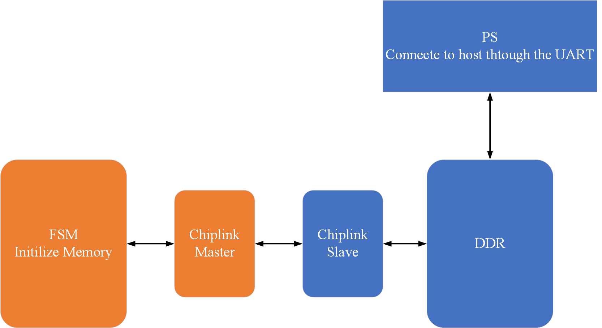
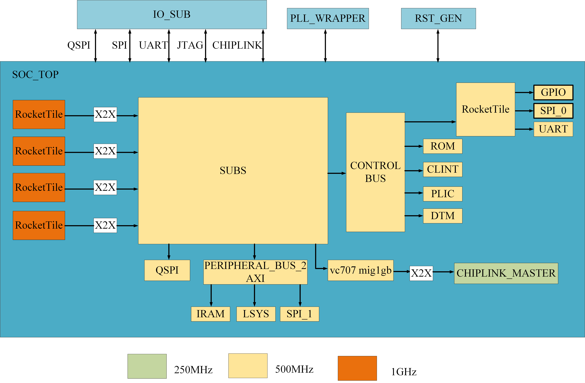
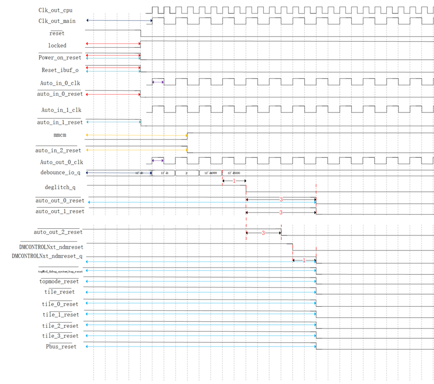
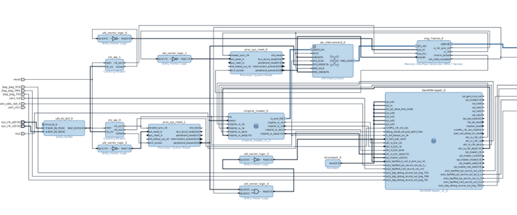

3. Prototype Verificaton
3.1 FPGA Development
3.1.1 FPGA Version

3.1.2 ChipLink
Reference content from YiShengYiChip Board FPGA Development.
Note: When tested on VC707, Chiplink will prompt that timing requirements cannot be met when using 150Mhz and 200Mhz clocks. Actual testing shows that 150Mhz works, but 200Mhz does not!
Note: The address range we use for Chiplink is 0x8000_0000~0xdfff_ffff. Read and write operations in other address ranges will cause Chiplink to report a slave_err.
3.1.3 FPGA-side Block Design

ZYNQ7 Processing System - PS-side processor system
Requires the use of AXI_HP port
Clock use the clock provided by the PS side, frequency as needed (Chiplink module’s clock cannot use 200Mhz or higher, unable to meet timing requirements!)
Pin binding as needed, for example, the ZYBO 7020 development board can refer to the example
AXI Interconnection - AXI intelligent interconnect module
Here, AXI Interconnection has two functions
Synchronize AXI signals across clock domains, Chiplink uses a clock that is inconsistent with the DDR interface
Convert Chiplink’s AXI4 port signals to AXI3 port signals of the DDR interface
The above operations are automatically completed by the AXI Interconnection module
Processor System Reset - Synchronized reset module
Regardless of whether the reset signal is a synchronous or asynchronous reset, the Block Design will give serious warnings, requiring modification of port attributes, or all use synchronous reset
Therefore, Processor System Reset can be used to synchronize the reset signal to a certain clock, or a synchronized reset module can also be written (actually tested and works)
Chiplink - Symmetric structure, has one master port and one slave port, two Chiplink are actually the same, only the masked ports are different when instantiated
3.1.4 DDR Read and Write Test
In FPGA development, you can first verify that DDR is working normally by performing a DDR read and write test experiment on the board
In ZYNQ7020, you can complete the DDR read and write test by writing from the PL side and reading from the PS side using a serial port to print the content, specific pin assignment based on the actual situation binding

Add a state machine to send AXI signals to write DDR, Chiplink can be added or not, mainly to verify the operation of DDR.
Verification content: Single write DDR, Burst write DDR, etc.

Specific content and SDK side can refer to Altera’s video and project
65_AXI4 DDR Read and Write Test Experiment (Part 1)_bilibili
3.2 Preface
3.2.1 Notation Conventions
Text conventions used in the manual are specified in Table 1.
3.2.2 Supported Tools and Environment Set Up
3.2.2.1 SW Requirements
Operating environment The project needs to run in ubuntu22.04.
Software dependence
Firstly,following command below to git clone the project.$git clone
Then Update software dependencies before downloading them.
$ sudo apt update$ sudo apt upgrade
Then install the software dependencies.
$ sudo apt-get install autoconf automake autotools-dev curl libmpc-dev libmpfr-dev libgmp-dev libusb-1.0-0-dev gawk build-essential bison flex texinfo gperf libtool patchutils bc zlib1g-dev device-tree-compiler pkg-config libexpat-dev python wget
$ sudo apt-get install default-jre
Install the tool chain
Running the project also requires installing the required RISC-V toolchain for compilation on the software, the RISC-V software toolchain must be installed locally, and the $(RISCV) environment variable must be set to point to the installed RISC-V toolchain. You can start from scratch to build tool chain or at the following link to download: https://www.sifive.com/products/tools/, if you have installed the RISC-V toolchain, please run the following command.
Note: Do not include /bin at the end of the string.
$ export RISCV=/home/riscv/riscv64-elf-tc
Install vivado2016.4
This project tested can only use vivado2016.4 version to build, other newer versions will have errors.
3.2.2.2 HW Requirements
Supported development board
Xilinx VC707(Virtex-7 XC7VX485T-2FFG1761C) is currently used in this project, and other types of FPGA boards have not been tested.
3.3 Introduction
The Soc built in this project was named MEISHAV100, which was built based on the freedom u500 of sifive Company, and the tilelink bus was replaced by the original pcie interface into the chiplink interface. iram, lsys, spi1 and qspi modules are added to make it have more debugging methods.
In order to accelerate processor prototyping and provide a flexible framework for hardware/software interface validation, the FPGA prototype based on this MEISHAV100 is publicly released. This version of the open source files include Verilog source code, Vivado project, bitstream files and related documentation, so that the majority of researchers and college students can quickly learn to copy the project, and easily transplant to other models of FPGA development board.
Due to the limitation of FPGA prototype verification, the current project only includes four Rocketchip processor cores, and the clock frequency of each module has certain limitations, which cannot achieve high frequency. See Figure 1 for details.
3.4 Prototype Architecture
3.4.1 Top Level Architecture
The overall architecture of MEISHAV100 is shown in Figure 1. In this project, MEISHAV100_TOP is the top layer of FPGA prototype verification project.

3.4.2 Clock and Reset
After the clock of the VC707 on-board differential clock source is converted into a single-ended clock through an IBUFDS primitive, xilinx’s PLL IP core module will generate 3 CLKS, which are respectively provided to rockecttile, chiplink module and other sub. The chip is expected to support RocketTile using 1GHz clock, CHIPLINK module using 250M clock, and other modules using 500M clock, but currently in the FPGA prototype verification project, except chiplink module using 150MHz clock, other unified use 50MHz clock. Otherwise, too high a frequency will lead to timing violations.
The top layer ResetGEN module generates multiple resets, which are respectively provided to rockecttile, chiplink module and other subs. It is expected to support the reset signal generated after RocketTile uses 1G clock to beat, and the reset signal generated after CHIPLINK module uses 250M clock to beat. The reset signal generated after other modules use the 500M clock is supported. See Figure 2 for the reset timing diagram.

Clock and reset time sequence diagram
3.4.3 Peripheral Architecture
The peripherals of this project and the memory mapping of peripherals are shown below
| Base | Size | Description | Notes |
|---|---|---|---|
| 0x0000_0000 | 4K | debug-controller | |
| 0x0000_3000 | 4K | error-device | |
| 0x0001_0000 | 8K | mask rom | |
| 0x0200_0000 | 64k | clink | |
| 0x0c00_0000 | 4M | plic | |
| 0x5000_0000 | 512K | on chip sram | |
| 0x5100_0000 | 4K | soc_lsys | |
| 0x5200_0000 | 4K | spi_1 | |
| 0x6000_0000 | 64M | timeout | |
| 0x6400_0000 | 4K | serial | narrow or sparse is not supported |
| 0x6400_1000 | 4K | spi_0 | narrow or sparse is not supported |
| 0x6400_2000 | 4K | gpio | narrow or sparse is not supported |
| 0x8000_0000 | 1G | DDR(CHIPLINK) | |
| 0Xc000_0000 | 1G | timeout | this space is not accessible and access will case the bus to crash |
3.4.4 Chiplink Module
ChipLink is a low-speed interchip bus communication protocol (between FPGA and SoC) proposed by SiFive, which is mainly used for shard transmission and recombination of AXI4 requests sent by SoC to reliably access hardware logic resources on FPGA. The ChipLink controller Verilog code on the FPGA core board was generated by Chisel and has been emulated on the VCS.
Tilelink bus is mainly used in this project, so it is not necessary to convert AXI request into TileLink request. Instead, TileLink request can be directly converted into Chiplink request, and then SoC signal can be transmitted to FPGA through ChipLink transmission. The FPGA side needs to combine the TileLink request according to the ChipLink protocol, then convert the TileLink request back to the AXI request through the switching bridge, and finally exchange data with the MIG IP core on the FPGA through a series of switching Bridges, so as to realize the memory access operation of DDR on the FPGA.
Tested on VC707, when Chiplink uses 150MHz and 200MHz clocks, Vivado software will prompt that it cannot meet the timing requirements. However, the actual measured result is that Chiplink can still work normally at 150MHz, but not at 200MHz.
Note: The address range of the Chiplink we use is from 0x8000_0000 to 0xDfff_ffff. Reading and writing Chiplinks in other address ranges will report a slave error.
3.5 Mapping of Main Memory
3.5.1 Using on-Board DDR3 Memory
All currently supported development boards have DDR3 memory on it. This allows us easily implement processor main memory using Xilinx MIG 7 IP core.
3.5.2 Added IRAM Module
Compared with Freedom U500, this project has added an IRAM module that can quickly access on-chip resources, mainly used to store frequently accessed stacks, hot data, hot programs, etc. The IRAM module supports axi fix and incr operation types, burst 1-16 operation types, narrow operation and sparse operation, but does not support wrap operation. Meanwhile, wstrb needs to be consistent with size, and invalid bits need to be set to 0.
3.5.3 SD Card as External Memory
The SDHC Card should conform to SD specification 2.00 or later. This project is currently using Kingston’s 64GB SDHC memory card and SD adapter.
3.6 Boot mode and Serial terminal settings
3.6.1 Start-up Process
The startup process of MEISHAV100 for this project is as follows:
Power on → Run the boot program in the maskROM → Load the Linux image file bbl.bin in the SD card to the DDR → Start the Linux system
The bootloader program stored in maskROM mainly completes loading and starting Linux image files from SD card to DDR storage, see Section 11 for details.
The construction of Linux image files stored in an SD card is detailed in Section 10.
3.6.2 Boot Mode Setup
The project currently supports two startup modes, namely starting from SD card and starting from IRAM, by binding the top-level signal DEBUG_MODE_SEL to the on-board DIP switch. If the signal is 0, it starts from the SD card boot program, and if the signal is 1, it starts from IRAM.
3.6.3 Serial Terminal Setup
Open a terminal connection from the host to the MEISHAV100 VC707 FPGA development board using programs such as Minicom or Screen on Linux, or MobaXterm on Windows. Set the parameters as shown below.
| Parameter | Value |
|---|---|
| Speed | 115200 |
| Parity | None |
| Data bits | 8 |
| Stop bits | 1 |
| Hardware Flow | None |
3.7 Prototype Operation
3.7.1 Reset Sequence
After reset button is pushed, the signal is converted to an internal system reset with zero active level.
If there is DDR controller,system reset is used for MIG XILINX IP core first.Until the initialization signal of the DDR controller is raised, then the DDR initialization is completed. The reset signal will only be used by the core.
3.7.2 Booting OS from an SD Card
Micro SD card allows to store both OpenBoot and OS image on it.Entering the OS with the sd card requires configured the clock frequency of uart and spi, and the default clock frequency of the processor is 50m. We have provided the pre-compiled linux systems that you can write into the sd card to run the linux system. Since you are unable to connect to the network on FPGA VC707, if you need to download the file on linux, you need to download the file into the linux system in the PC and write linux to the sd card.
3.8 Simulation and Debugging
It is possible to run software simulation of MEISHAV100 prototype from Vivado.This feature is helpful for debugging reset sequence for your project and checking initial initialization sequence of a processor. This framework can be easily extend to incorporate custom tests targeting prototype specific modules, but we leave this discussion out of scope of this documentation.
For debugging a processor on FPGA build-in hardware logic analyzer are used. It allows to check states of internal signals. Instructions on how to run software simulation from Vivado and how to add debug cores are below.
3.8.1 Software Simulation from Vivado
You can run simulation of a prototype from Vivado to debug initial processor initialization and warm up. Simulation from Vivado allows you to you IP cores used for synthesis and ensure that you logic is interpreted in an expected way. Top level module for simulation if fpga_top.It generates clock are reset control signals for prototype.
Write tb.v file, the project has provided relatively simple simulation files, but if you have higher simulation requirements, please add the files required for the simulation
Click on Tools→click on settings→click on simulation →Compile Simulation Libraries
Click on simulation→Select the emulator that you wish to use.The recommended simulator to use is Vivado, as it don’t need to compile simulation libraries and configure the co-simulation.
In Flow Navigator on the left chose Simulation→Run behavioral Simulation. If you want to Post-Synthesis Functional Simulation, click on Functional Simulation.This requires first running the SYNTHESIS.
3.8.2 Inserting Debug Cores for Logic Analyzer
Build-in logic analyzer allow you to debug FPGA design while it’s running. Next steps briefly describe how to add debug cores.
Find signals in the design which you want to debug. To make sure that Vivado doesn’t optimize the logic corre sponding and you will be able to access a signal with debug cores, add ( MARK_DEBUG = “TRUE” ) before it. This directive works with flip-flops and ports, but can not work well with wires. If you need, add additional logic to flip-flop signals.
Run Synthesis of a design
After synthesis finished, expand Open Synthesized Design tab of Flow Navigator and click on Set Up Debug
Follow the steps in the prompt to add signals for monitoring and to assign clock domain to them
Save the design and finish FPGA flow down to bitstream generation when programming FPGA from Vivado, in addition to .bit files specify .ltx files with debug signals names
3.9 Block Design
The prototype was validated with Xilinx’s vivado2016.4 and connected to the module with its ip core via vivado’s block design capabilities. The Block Design diagram is shown under:

Block Design diagram
The configurations of some ip cores are described below
Utility Buffer: click on page0→C size:1,C BUF Type :IBUFDSclk_wiz_0: This is the clock for processor, set the input clock to 200m, the output clock clk_out 1, clk_out 2 to 50m, and set the high level resetclk_wiz_1:This is the clock for the DDR controller, set the input clock 200m, the output clock clk_out1 is 200m, set the high level resetprocess System Reset:For changing the asynchronous reset of the input to a synchronous resetAxi interconnect:The number of Master and Slave was all set at 1Memory Interface Generator:This is the DDR controller module, used for controlling the DDR.chiplink_master:This is the rtl code we provide, and this module allows the core to control DDR through chiplink, which can reduce the pin interface compared to the axis bus.DevKitWrapper:This is the processor module, and some interfaces leave 0 unused because they are not used.
3.10 About Networking
In this project, the PCIe interface of the original freedom U500 was replaced with a chiplink module, so MEISHAV100 could not be connected to the network for the time being. However, some bus matrices could be connected to the external chiplink interface in the future, and the MAC IP core of the FPGA board could be used to transmit network data on the bus matrix.
3.11 Generating an SD-Bootable Image
The Linux image file of this project needs to be built in ubuntu16.04 environment. In the ubuntu16.04 environment, run the following command to install and compile the required software package:
$ apt-get install -y build-essential git autotools-dev texinfo bison flex
libgmp-dev libmpfr-dev libmpc-dev gawk zlib1g-dev libssl-dev python unzip
libncurses5-dev libglib2.0-dev libpixman-1-dev device-tree-compiler ftp$wget cpio bc gdisk e2fsprogs vim
Then the overall sdk package this project uses the sdk package in the warehouse freedom-u-sdk. Clone the warehouse as follows:$ git clone
https://github.com/mcd500/freedom-u-sdk.git$ git checkout
remotes/origin/linux_u500vc707devkit_config
After cloning, we still need to clone its sub repositories, but due to the fact that the freedom-usdk repository is too old, many of its sub repository URLs have been changed, which poses a problem of not being able to download directly using the recursive download command of the sub repository.
This project has updated the URLs of sub repositories that cannot be downloaded in the. gitmodules file. These updated. gitmodules files have been placed in the xx/xx/xx path. Please replace files in order, and execute the following command for each file replaced.
The steps are as follows:
1.Rename freedom-u-sdk.gitmodules to.gitmodules, and then replace the.gitmodules file in the freedom-u-sdk directory.
2.Run the following commands in sequence:$ git submodule sync$ git submodule update --init --recursive
3..Switch the sub-repository to the version specified by freedom-u-sdk.
4.Rename qemu.gitmodules to.gitmodules and replace the.gitmodules file under freedom-u-sdk/riscv-qemu.
5.Run the following commands in sequence:$ git submodule syncgit submodule update --init --recursive
6.Switch the sub-repository to the version specified by freedom-u-sdk.
7.Rename toolchain.gitmodules to.gitmodules and replace the.gitmodules file under freedom-u-sdk/riscv-gnu-toolchain.
8.Run the following commands in sequence:
$ git submodule sync
$ git submodule update --init --recursive
9.Switch the sub-repository to the version specified by freedom-u-sdk.
10.Rename toolchain-qemu.gitmodules to.gitmodules, and then replace the.gitmodules file under freedom-u-sdk/riscv-gnu-toolchain/riscv-qemu.
11.Run the following commands in sequence:
$ git submodule sync
$ git submodule update --init --recursive
12.Switch the sub-repository to the version specified by freedom-u-sdk.
13.Finally, the complete download of freedom-u-sdk was completed
After completing the full clone of the repository, compile and execute the Linux image:
$ make -j4 BOARD=vc707devkit
After the Linux image is compiled and generated, you can find the generated image file, that is, the bbl.bin file, under the work folder. Use the following command to burn the bbl.bin to the SD card.
$ sudo dd if=bbl.bin of=/dev/sdb bs=512K count=1
If you need to add peripherals yourself, modify the MEISHAV100.dts file, add the device tree of the corresponding device, and generate a dtb file to obtain driver support.
3.12 Compile the ROM boot program
The bootloader is sd.c located in the sdboot folder. Please use the gcc environment on the freedom library during compilation, otherwise an error will occur. The toolchain used is riscv64-unkown-elf-gcc. Please compile the toolchain provided by the freedom library and add the bin folder path of the toolchain to the system environment variable file.bashrc.
After modifying the sd.c file, you can use the make command in the sdboot folder to compile the sdboot.Hex file. You need to add the path of the file to the maskROM.